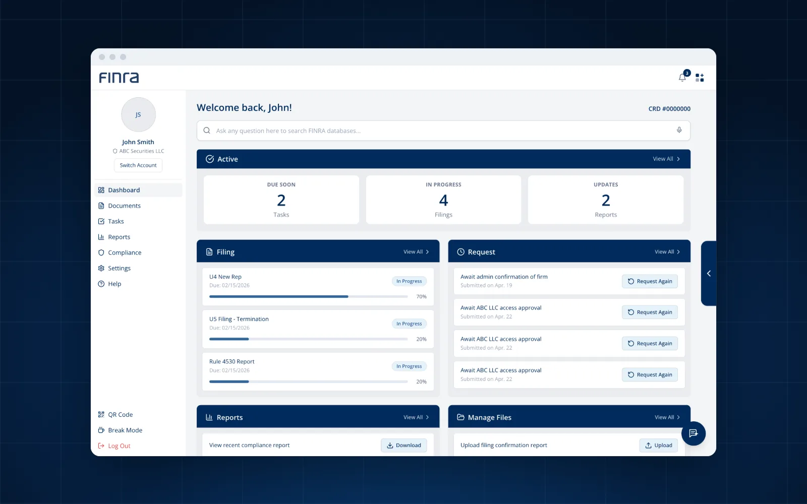
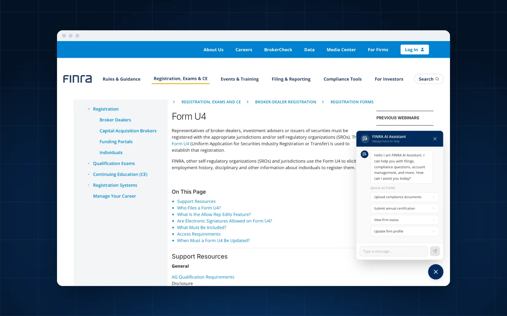
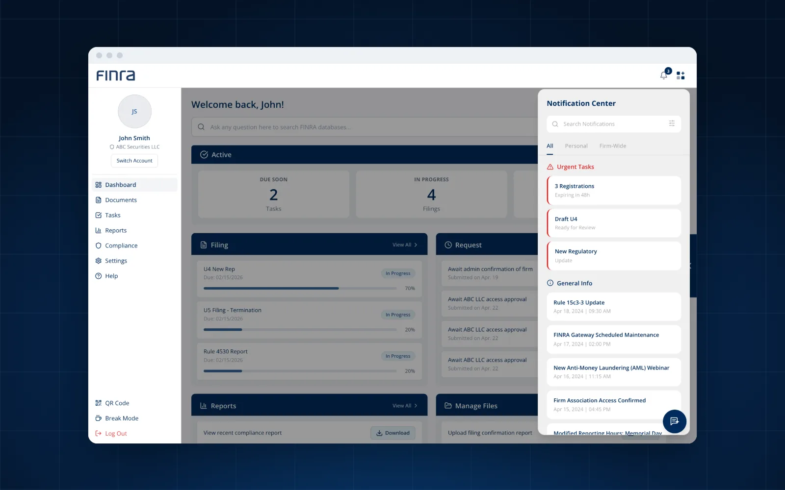
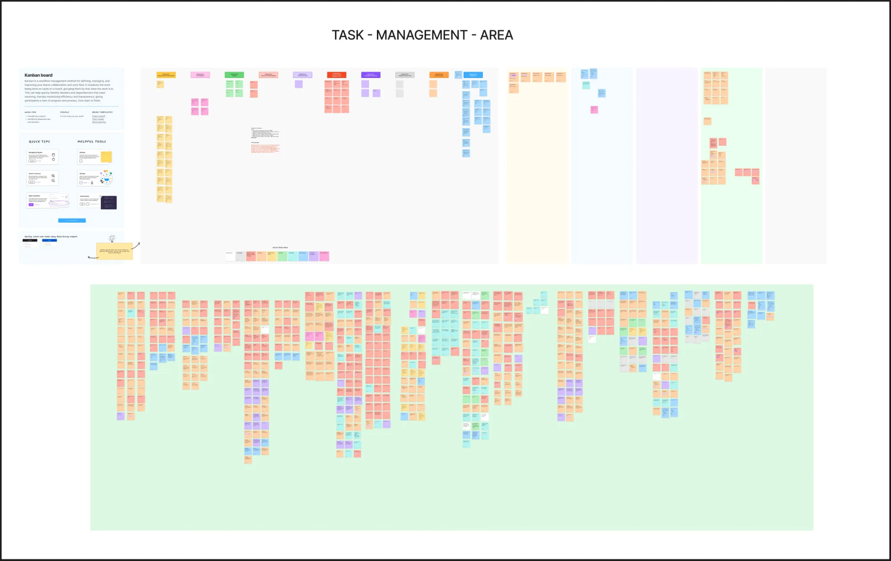
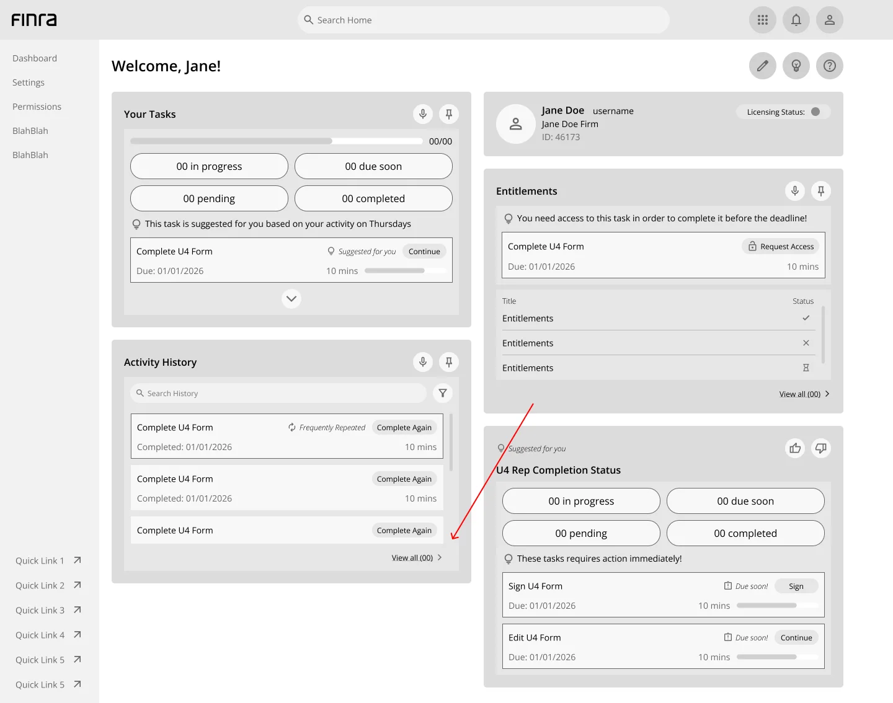
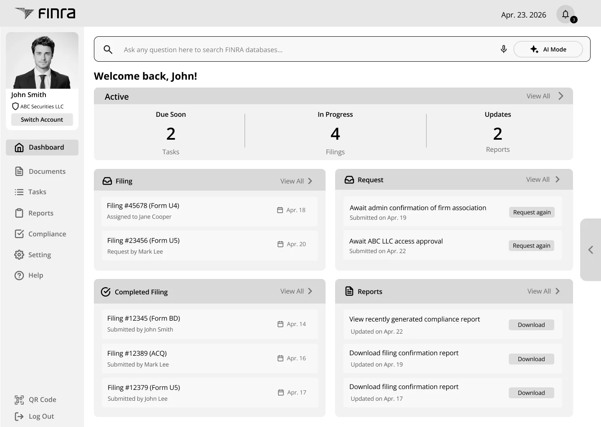
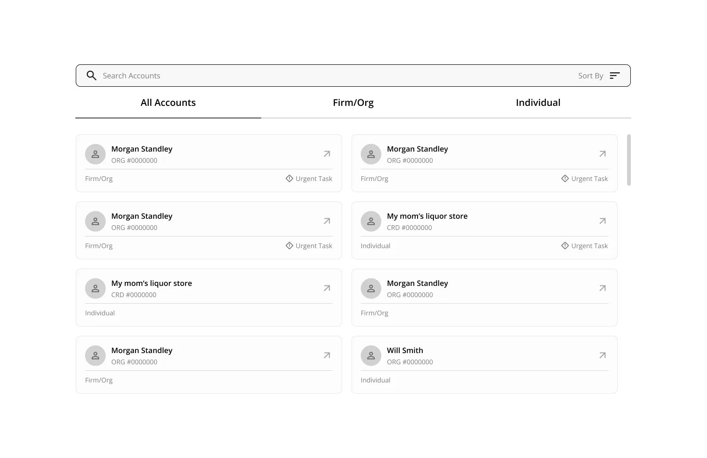

From website pain to the gateway
The design connected the issues users have on today’s website to what they see in the gateway, and the sidebar made the platform more action-oriented.
One login and an active dashboard for FINRA.
SCROLL
FINRA’s users juggle many systems, logins and forms, and often can’t tell where to go next. With FINRA, our SCADpro team designed one login and an active dashboard that guide firms from sign-in to finished filings.



Research Lead on a 21-person SCADpro team, guiding how we learned about FINRA’s users and turning what we found into the problems the design had to solve.
Most visitors never make it past the first page.
0%
of FINRA.org visitors leave after viewing just one page.
When users feel uncertain, they don’t search harder. They leave.
62 leave38 stay
Our goal: create a unified login and dashboard that streamlines navigation, task completion and permission-based access across FINRA’s platforms. If FINRA’s systems are inefficient, firms struggle to finish required tasks on time, raising the risk of mistakes and compliance issues.
Users say “FINRA” for a whole constellation of systems.
We combined SME interviews and user surveys with forum research, case studies of high-trust platforms, and AI models. The first thing we learned: what users call “FINRA” is really many separate systems, each with its own entrance.
10+FINRA sites and systems for information and actions
100+updates to the website every month
One word, many doors.Hover or tap a system to see what users actually mean.
FINRA.orgRules, guidance and news, where most journeys begin.
GatewayWhere firms file, report and request access.
FinProThe portal for individual registered professionals.
DR PortalDispute resolution: arbitration and mediation.
BrokerCheckThe public lookup for brokers and firms.
Web CRDThe registration and licensing database.
Unsure about contacting their own regulator, users turn to anonymous forums like Reddit for help. These are real posts we collected.
I can’t log into FINRA.
How to deal with it or whom do I connect with… Can anyone help or share the process?
Should I be worried?
Is there a support email?
0 official replies
Critical information is buried under legal jargon and layers of tabs. Users told us they spend hours “translating” legalese into actionable steps, afraid one misread term could mean a costly penalty.
Our answer in the final design: Highlight & Translate. Select a confusing term and get a plain explanation.
A typical instruction
File an amended on your in FINRA Gateway once your has been approved by your firm’s , then confirm the update in .
DRPDisclosure Reporting Page: where you report events like a customer complaint or a legal issue.
Form U4The form that registers a representative with FINRA and the states.
EntitlementPermission to use a specific FINRA system or function.
SAASuper Account Administrator: the person at your firm who grants that access.
CRDCentral Registration Depository: FINRA’s registration and licensing database.
From passing the exam to the first login.
High expectationA major career milestone. Users expect immediate validation and their credentials.
The realityThey passed, then hit a wall at login, with no clear way forward.
The emotional stateWith no feedback from the system, anxiety builds and users start doubting their own success.
From SME interviewsInternal experts had been deciding for users without direct research. They pointed us to a “lobby” and an active workspace.
From case studiesHigh-trust platforms orient users right after login, reveal complexity step by step, and slow down risky actions on purpose.
From AI modelsAI works best as a navigation layer that lowers cognitive load, not a gimmick.
700+
data points, from every interview, survey and forum post

From 85 sketches to a connected system.
We sketched over 85 ideas, then built mid-fidelity login and dashboard wireframes in three rounds.



Everyone finished. Not everyone felt sure.
18 participants aged 18–40 tried five realistic tasks. All of them completed every task, yet many hesitated along the way.
18participants
100%task completion
Participants who felt confused, by task
Confusion came from unclear feedback and system state, not from the tasks themselves.
At Week 7, FINRA pushed us to bring FINRA.org content into the task-based workflow. We shifted from building “just another login” to a connected system that bridges workflow and knowledge, scalable across FinPro, Gateway and the rest.
Same task. A very different journey.
Filing a Form U4, before and after.
An illustrated journey built from the pain points we found in research: unforgiving search, multiple entry points, repeated logins, mixed interfaces, re-entering form data and aggressive timeouts.
A student prototype made with FINRA. Nothing you type is sent anywhere; please don’t enter real credentials.
“Connected the dots with storytelling.”
We presented the process as a journey through a maze, from entering to finding the exit, then let the FINRA team explore the coded prototype themselves.
The design connected the issues users have on today’s website to what they see in the gateway, and the sidebar made the platform more action-oriented.
Move the chatbot into the sidebar so it never blocks content, make it clear when AI mode is on with an on/off toggle, and find a better way to show progress than exact percentages.
Next project
Fitfido
View case study